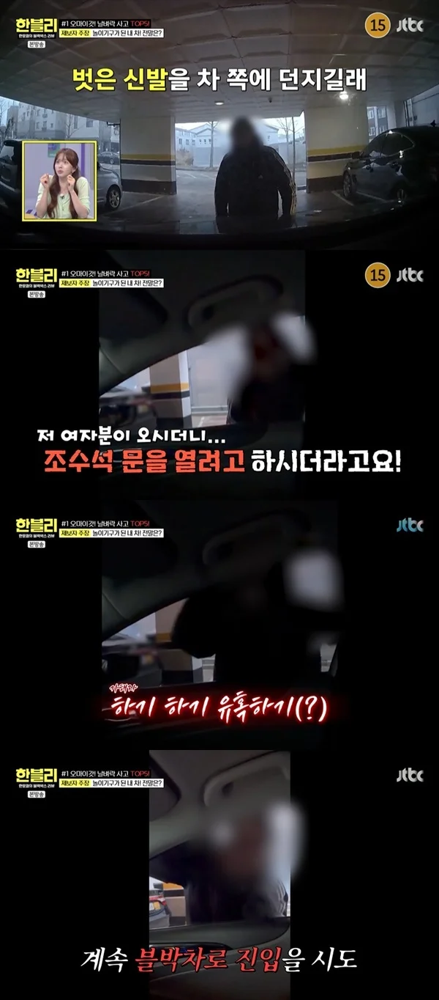
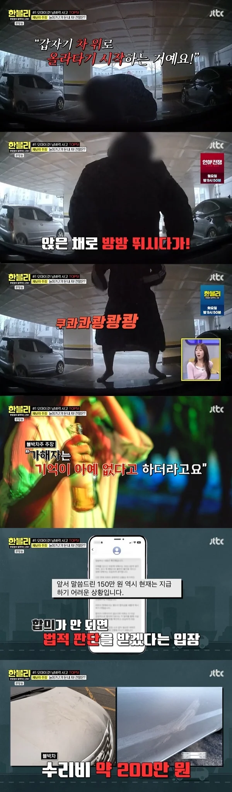

40대 여자가 주차장 유혹? 차 위 올라와 쿵쾅 '충격과 공포 그 자체' (한블리)[어제TV] : 네이트 연예


날벼락 사고 1위 제보자는 아침 7시에 야간 근무를 마치고 퇴근해 주차하던 중에 변을 당했다.
갑자기 나타난 여자가 “야! 너!”라고 소리치며 신발을 차로 던진 것.
40대 초반으로 보이는 여자에게 놀란 제보자는 일단 차를 세웠다.
여자는 차 조수석 문을 열려고 했고 “하기 하기 유혹하기”라는 정체불명의 말을 했다.
이상한 낌새를 차린 제보자가 핸드폰으로 따로 영상 증거를 남기기 시작하자 여자는 “야 뭐 찍냐?”며 핸드폰을 향해 웃으며 인사를 하고 포즈도 취했다.
제보자에 따르면 여자는 자꾸 차 안으로 들어오려 했고,
제보자는 일이 커질 것 같아서 대꾸하지 않았다.
잠깐 사라졌다가 다시 나타난 여자는 급이야 보닛 앞쪽으로 와서 올라타더니 앉아서 뛰고 서서 뛰기를 반복했다.
여자가 3분 동안 차 보닛 위에서 쿵쾅거리며 차가 망가졌고,
제보자는 “굉장히 큰 흔들림이었다. 진정이 안 되고 토할 것 같았다”고 차 안에서 느낀 고통을 호소했다.
여자는 신발을 던지고 욕도 하기를 반복했고 제보자는 내렸다가 상해를 입을까봐 경찰에 신고했다.
10분 후 경찰이 도착했고, 여자는 경찰에게도 난동을 부렸다.
하지만 이후 여자는 그 상황을 전혀 기억하지 못 했다고.
제보자에 따르면 여자는 사건 당시 만취한 상태였고.
경찰은 합의 연락이 갈 거라고 했지만 제보자는 2달 동안 아무 연락도 받지 못 했다.
기다리다 못해 경찰에게 연락하니 그제야 여자의 남편에게서 “와이프가 기억이 없어서 상황을 알 수 없다”는 답이 왔다.
제보자는 이웃 주민끼리 얼굴 붉힐 필요가 있나, 250만원 합의를 원했지만 여자의 남편은 150만원 이상은 힘들다고 응수했다.
결국 재판에서 여자는 재물손괴죄로 100만원 벌금형을 받았다.
제보자는 “벌금 100만원이 합의보다 싸다고 생각해서 적극적으로 피해 회복 노력을 안 하는 것 같다”며 차 수리비만 200만원이 나왔다고 답답함을 토로했다.
황당하고 억울한 상황에 제보자는 답답하고 화가 난다고.
한문철은 “벌금만 내면 끝이냐. 민사로 해야 한다. 자차보험 수리 후 가해자에게 구상권을 청구해야 한다”고 조언했다.
벌금을 냈다는건 민사 승리가 확정이라는 것